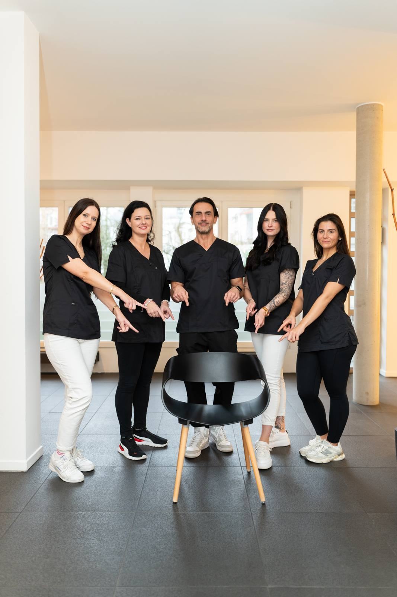

Startseite / Leistungen / Füllungen
Zahnfüllungen in Düsseldorf & Kempen
Eine rechtzeitig gelegte Füllung stoppt Karies und bewahrt Ihren Zahn vor größeren Eingriffen.

Eine rechtzeitig gelegte Füllung stoppt Karies und bewahrt Ihren Zahn vor größeren Eingriffen.
Kassenfüllung, zahnfarbenes Komposit oder laborgefertigte Inlays aus Gold und Keramik.
Die Behandlung erfolgt unter örtlicher Betäubung.
Die Kasse übernimmt die Grundversorgung; für Komposite und Inlays fällt ein Eigenanteil an.
Eine Füllung ist der Verschluss eines Zahndefekts, nachdem das von Karies zerstörte Gewebe entfernt wurde. Karies wird durch Bakterien verursacht, die Zucker zu Säuren abbauen; diese Säuren lösen Mineralien aus dem Zahn und höhlen ihn nach und nach aus. Weil sich zerstörte Zahnhartsubstanz nicht neu bildet, muss die weiche Stelle entfernt und der Zahn wieder dicht und formstabil aufgebaut werden.
Dafür stehen mehrere Materialien zur Wahl. Zahnfarbenes Komposit, ein Kunststoff mit feinen Keramikpartikeln, wird in Adhäsivtechnik schichtweise mit dem Zahn verklebt und erlaubt eine substanzschonende, unauffällige Versorgung. Bei größeren Defekten sind im Labor gefertigte Einlagefüllungen – Inlays aus Keramik oder Gold – die stabilere Wahl, weil sie außerhalb des Mundes präzise geformt und anschließend eingeklebt werden. Dazu kommt die Kassenfüllung als Grundversorgung. Anders als eine Krone ersetzt eine Füllung nur den fehlenden Teil des Zahns; ist zu viel Substanz verloren, wird eine Krone nötig, um den Zahn vor dem Bruch zu schützen.
Reicht der Defekt bis in den Zahnnerv, genügt eine Füllung nicht mehr – dann ist eine Wurzelbehandlung nötig. Ist der Zahn großflächig zerstört, hält eine Füllung dem Kaudruck langfristig nicht stand; hier ist ein Inlay oder eine Krone die verlässlichere Lösung.

Salierpraxis Düsseldorf
Salierpraxis Kempen
Karies verursacht anfangs keine Schmerzen – deshalb wird sie meist bei der Kontrolle oder der professionellen Zahnreinigung entdeckt, wenn eine kleine Füllung noch genügt. Nach einer Betäubung sollten Sie warten, bis das Gefühl vollständig zurück ist, damit Sie sich nicht auf Wange oder Zunge beißen. Komposit-Füllungen sind sofort belastbar. Dass ein Zahn einige Tage lang kälteempfindlich reagiert, kommt vor und klingt in der Regel wieder ab; halten die Beschwerden an, melden Sie sich bitte.
Jede Behandlung wird individuell auf Ihren Befund abgestimmt.
Wir untersuchen den Zahn und bestimmen die Ausdehnung der Karies, etwa die Nähe zum Zahnnerv. Bei Bedarf hilft eine Röntgenaufnahme, weil Karies zwischen den Zähnen von außen oft nicht sichtbar ist.
Eine örtliche Betäubung sorgt dafür, dass die Behandlung schmerzfrei bleibt. Bei kleinen, oberflächlichen Defekten ist sie manchmal nicht einmal erforderlich – das entscheiden Sie mit.
Die Karies wird vollständig entfernt und der Zahn gereinigt und getrocknet. Wir arbeiten so substanzschonend wie möglich, damit möglichst viel gesunder Zahn erhalten bleibt.
Komposite werden schichtweise eingebracht und mit Licht ausgehärtet, was eine sehr präzise Formgebung erlaubt. Für Inlays wird abgeformt und das Werkstück in einer zweiten Sitzung eingeklebt.
Abschließend prüfen wir Form und Biss und polieren die Füllung glatt. Eine saubere Politur verhindert, dass sich am Rand neue Beläge festsetzen.
Dauer bei einer Komposit-Füllung meist etwa 30 bis 60 Minuten, bei einem Inlay zwei Termine
Die Karies wird gestoppt, bevor der Zahnnerv betroffen ist
Zahnfarbene Materialien sind im Mund praktisch nicht zu erkennen
Die Adhäsivtechnik verklebt die Füllung mit dem Zahn und schont gesunde Substanz
Der Zahn ist meist direkt nach dem Termin wieder voll belastbar
Bei größeren Defekten stehen mit Inlays besonders formstabile Lösungen bereit
Die gesetzlichen Krankenkassen übernehmen eine ausreichende und zweckmäßige Grundversorgung – im Front- und im Seitenzahnbereich gibt es jeweils eine Regelversorgung, die für Sie ohne Eigenanteil bleibt. Wünschen Sie ein aufwendigeres Verfahren, etwa eine mehrschichtige Komposit-Füllung im Seitenzahn oder ein laborgefertigtes Inlay aus Keramik oder Gold, zahlen Sie in der Regel die Differenz als Eigenanteil. Diese Mehrkostenvereinbarung halten wir vorher schriftlich fest, sodass Sie die Summe kennen, bevor wir beginnen. Privat Versicherte erhalten je nach Tarif eine Erstattung. Was für Ihren Zahn medizinisch sinnvoll ist und was darüber hinausgeht, sagen wir Ihnen offen.
Die Angaben sind allgemeine Hinweise. Was in Ihrem Fall übernommen wird, hängt vom Befund und Ihrem Versicherungsschutz ab – wir beraten Sie persönlich und halten alles schriftlich fest.
Ist Ihre Frage nicht dabei? Rufen Sie uns gern an – wir nehmen uns Zeit.
Eine Zahnfüllung wird durch die örtliche Betäubung schmerzfrei gelegt – Sie spüren Vibration und Wasser, aber keinen Schmerz. Unangenehm ist für viele nur der Einstich, den wir mit einem Betäubungsgel vorbereiten können. Bei sehr kleinen Defekten geht es oft ganz ohne Spritze. Wenn Sie Angst vor dem Bohrer haben, ist zusätzlich eine Lachgassedierung möglich.
Eine Füllung hält üblicherweise mehrere Jahre, häufig fünf bis zehn Jahre und länger – abhängig von Material, Größe und Belastung. Kleine Füllungen im Frontzahnbereich überdauern meist große Füllungen im Seitenzahn, wo der Kaudruck am höchsten ist. Bei jeder Kontrolle prüfen wir die Ränder, denn undichte Übergänge sind die häufigste Ursache für neue Karies.
Nach einer Komposit-Füllung dürfen Sie sofort essen, weil das Material direkt im Mund vollständig aushärtet. Warten Sie aber, bis die Betäubung abgeklungen ist – sonst besteht die Gefahr, sich auf Wange oder Zunge zu beißen. Bei anderen Materialien oder nach dem Einkleben eines Inlays geben wir Ihnen eine konkrete Empfehlung mit.
Karies kann am Rand einer Füllung erneut entstehen, wenn der Übergang undicht wird oder dort Beläge liegen bleiben. Man spricht dann von Sekundärkaries. Sie ist der Hauptgrund, warum Füllungen irgendwann erneuert werden müssen. Gründliche Zahnzwischenraumpflege, regelmäßige Kontrollen und eine professionelle Zahnreinigung senken dieses Risiko deutlich.
Amalgam wird in Deutschland seit 2025 nicht mehr für neue Füllungen verwendet – die Versorgung erfolgt mit alternativen Materialien. Vorhandene, intakte Amalgamfüllungen müssen deshalb nicht vorsorglich entfernt werden. Wird eine alte Füllung undicht oder brüchig, ersetzen wir sie ohnehin und besprechen mit Ihnen, welches Material für den Zahn geeignet ist.

Reicht die Karies bis zum Zahnnerv, hilft eine Wurzelbehandlung, den Zahn dennoch zu erhalten.
Mehr erfahren
Regelmäßige professionelle Zahnreinigung deckt neue Kariesstellen früh auf, solange eine kleine Füllung genügt.
Mehr erfahren
Ist zu viel Zahnsubstanz verloren, schützt eine Krone den Zahn besser als eine große Füllung.
Mehr erfahrenHaben Sie Fragen zu dieser Behandlung? Wir laden Sie herzlich zu einem persönlichen Gespräch ein.
Termin vereinbaren